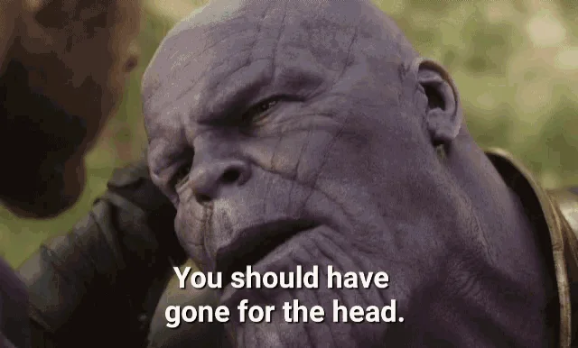

 highest priority at any moment is to attack the most important/biggest/hardest problem. the one that is causing more problems, the one that you hate/fear most. if you can do that, you can do anything else too.